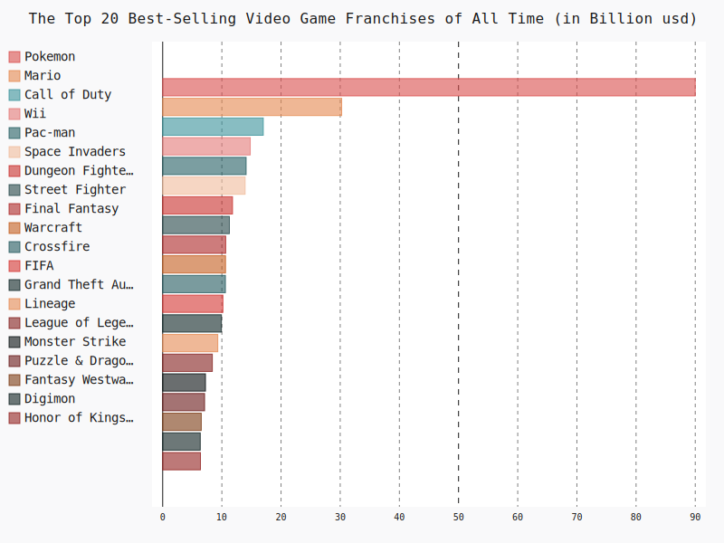
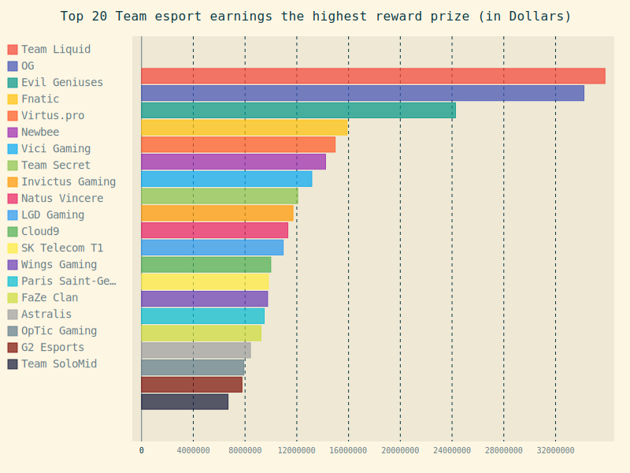
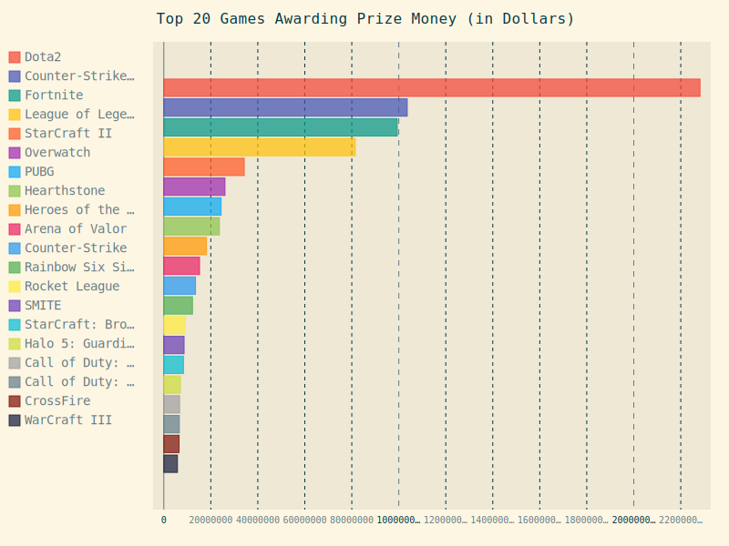
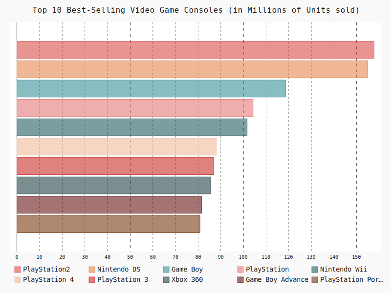

Data Analysis: e-sport by KAIF

| #Web นี้จะมีเนื้อหาที่เกี่ยวข้องกับการจัดอันดับในด้านต่างๆ เช่น รายได้ของเกม, ความนิยม, มูลค่าเงินรางวัล ฯลฯ ซึ่งจะเน้นด้านข้อมูลที่เกี่ยวข้องกับ e-sport ซึ่งกำลังได้รับความนิยมอย่างแพร่หลายในปัจจุบัน e-sport นั้นนอกจากจะเป็นกีฬา ที่ให้ความบันเทิงแล้วนั้นยังช่วยสร้างรายได้ให้กับนักกีฬา นักพากย์ หรือ ทุกอาชีพที่มีความเกี่ยวข้องกับเกมที่ถูกจัดอยู่ในหมวดเกม ที่สามารถใช้เป็นกีฬาทางอิเล็กทรอนิกส์หรือที่เรามักเรียกกันว่า e-sportนั้นเอง |
|  |
 |
 |
TopFranchises |
TopHighestEarnings |
TopTeamE-SportEarnings |
กราฟนี้แสดงให้เห็นถึงยอดขายFranchisesเกมที่สูงที่สุด
Franchise Pokemon มีรายได้ทั้งหมดถึง 90000 ล้านUSdเลยทีเดียว ชื่อที่ใครได้ยินก็คงรู้จักกันแน่นอน เปิดตัวครั้งแรกเมื่อปี1996 จนถึงปัจจุบัน ก็ 23 ปี มาแล้วเป็น Franchisesที่สร้างตำนานเลยก็ว่าได้
นี่ยังไม่นับมูลค่าของสิ่งต่างๆ นอกเหนือที่ไม่ใช่เกม มีทั้งของเล่นสะสม และอื่นๆ ที่ทำเงินให้กับ Franchises อันดับ 2 อย่าง Mario ก็ไม่ธรรมดา มี Series มากมาย เป็นอีกFranchiseที่ยิ่งใหญ่
เมื่อพูดวิดีโอเกมที่เราเล่นกัน ตั้งแต่เกมแรกบนเครื่องเล่นConsoleจนถึงเกมที่วางจำหน่ายล่าสุดในยุคปัจจุบัน ก็มีอยุ่มากมาย บางเกมถ้ายอดขายดีมีชื่อเสียง ก็จะออกภาคต่อFranchiseตัวเองออกมา
จนทำรายได้ที่น่าทึ่งในวงการเกมกันเลยทีเดียว
กราฟนี้แสดงให้เห็นถึงรายได้นักกีฬาesport20อันดับแรกที่ได้รับเงินรางวัลมากที่สุด
ใน20อันดับแรก จะพบเป็นผู้เล่นเกม Dota2 ถึง 19 คนเลยทีเดียว ถือว่าเป็นเรื่องน่าสนใจ เพราะว่าเกม Dota2 นั้นเป็นเกมที่มีเงินรางวัลรวมในแต่ละปีที่ค่อนข้างสูง และยังเป็นเกมที่ครองสถิติเกม
ที่มีเงินรางวัลในการแข่งขันมากที่สุดในโลก ถึงแม้ว่าจะไม่ได้อันดับที่1 ในการแข่งขัน แต่การยังสามารถทำรายได้ได้มากมาย
กราฟนี้แสดงให้เห็นถึงรายชื่อ eSports Team ทั่วโลกที่ทำรายได้รวมสูงสุด
โดยส่วนใหญ่แล้วอันดับทีมที่ติดเข้ามา จะทีมย่อยไว้สังกัดในการแข่งขันหลายๆเกม เช่น Dota2,Csgo, Lol และอื่นๆ โดยอันดับที่1 ทีม Team Liquid ที่อยุ่คู่วงการมานาน มีนักกีฬาในสังกัดมากมายหลายคน
และอยุ่แข่งขันหลากหลายเกม ชื่อของพวกเขามักปรากฏอยุ่ในงานแข่งในหลายรายการระดับโลกอยุ่เสมอ ปี2020 อาจเป็นปีที่ยากลำบากสำหรับวงการesport เนื่องจากการแพร่ระบาดของไวรัส COVID-19
ทำให้การแข่งขันหลายรายการต้องยกเลิกไป แต่ถึงจะยังงั้นนักกีฬาก็ยังต้องสร้างผลงานการแข่งขันที่ยังพอมีเหลืออยุ่บ้างให้ได้ตามสมควร
|  |
 |
 |
TopGameAwardPrize |
TopVideoGameConsolesSell |
TopCompanies |
Franchise Pokemon มีรายได้ทั้งหมดถึง 90000 ล้านUSdเลยทีเดียว ชื่อที่ใครได้ยินก็คงรู้จักกันแน่นอน เปิดตัวครั้งแรกเมื่อปี1996 จนถึงปัจจุบัน ก็ 23 ปี มาแล้วเป็น Franchisesที่สร้างตำนานเลยก็ว่าได้
นี่ยังไม่นับมูลค่าของสิ่งต่างๆ นอกเหนือที่ไม่ใช่เกม มีทั้งของเล่นสะสม และอื่นๆ ที่ทำเงินให้กับ Franchises อันดับ 2 อย่าง Mario ก็ไม่ธรรมดา มี Series มากมาย เป็นอีกFranchiseที่ยิ่งใหญ่
เมื่อพูดวิดีโอเกมที่เราเล่นกัน ตั้งแต่เกมแรกบนเครื่องเล่นConsoleจนถึงเกมที่วางจำหน่ายล่าสุดในยุคปัจจุบัน ก็มีอยุ่มากมาย บางเกมถ้ายอดขายดีมีชื่อเสียง ก็จะออกภาคต่อFranchiseตัวเองออกมา
จนทำรายได้ที่น่าทึ่งในวงการเกมกันเลยทีเดียว
Franchise Pokemon มีรายได้ทั้งหมดถึง 90000 ล้านUSdเลยทีเดียว ชื่อที่ใครได้ยินก็คงรู้จักกันแน่นอน เปิดตัวครั้งแรกเมื่อปี1996 จนถึงปัจจุบัน ก็ 23 ปี มาแล้วเป็น Franchisesที่สร้างตำนานเลยก็ว่าได้
นี่ยังไม่นับมูลค่าของสิ่งต่างๆ นอกเหนือที่ไม่ใช่เกม มีทั้งของเล่นสะสม และอื่นๆ ที่ทำเงินให้กับ Franchises อันดับ 2 อย่าง Mario ก็ไม่ธรรมดา มี Series มากมาย เป็นอีกFranchiseที่ยิ่งใหญ่
เมื่อพูดวิดีโอเกมที่เราเล่นกัน ตั้งแต่เกมแรกบนเครื่องเล่นConsoleจนถึงเกมที่วางจำหน่ายล่าสุดในยุคปัจจุบัน ก็มีอยุ่มากมาย บางเกมถ้ายอดขายดีมีชื่อเสียง ก็จะออกภาคต่อFranchiseตัวเองออกมา
จนทำรายได้ที่น่าทึ่งในวงการเกมกันเลยทีเดียว
Franchise Pokemon มีรายได้ทั้งหมดถึง 90000 ล้านUSdเลยทีเดียว ชื่อที่ใครได้ยินก็คงรู้จักกันแน่นอน เปิดตัวครั้งแรกเมื่อปี1996 จนถึงปัจจุบัน ก็ 23 ปี มาแล้วเป็น Franchisesที่สร้างตำนานเลยก็ว่าได้
นี่ยังไม่นับมูลค่าของสิ่งต่างๆ นอกเหนือที่ไม่ใช่เกม มีทั้งของเล่นสะสม และอื่นๆ ที่ทำเงินให้กับ Franchises อันดับ 2 อย่าง Mario ก็ไม่ธรรมดา มี Series มากมาย เป็นอีกFranchiseที่ยิ่งใหญ่
เมื่อพูดวิดีโอเกมที่เราเล่นกัน ตั้งแต่เกมแรกบนเครื่องเล่นConsoleจนถึงเกมที่วางจำหน่ายล่าสุดในยุคปัจจุบัน ก็มีอยุ่มากมาย บางเกมถ้ายอดขายดีมีชื่อเสียง ก็จะออกภาคต่อFranchiseตัวเองออกมา
จนทำรายได้ที่น่าทึ่งในวงการเกมกันเลยทีเดียว